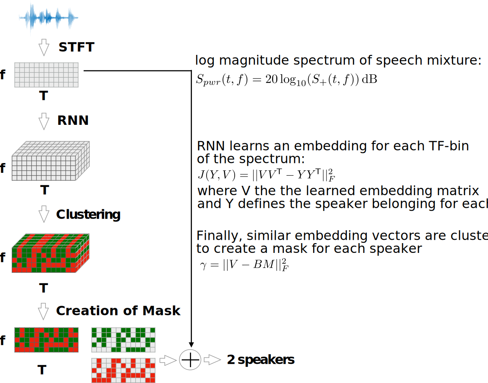
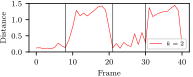
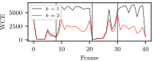
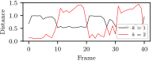

Source: Star Trek: The Next Generation, 5x28: Déjà Vu
* Separating a speech mixture into multiple speech segments that belong to different speakers
* Challenge lies in separating a mixture which consists of sources of the same domain and from
unknown speakers
Framework

Training the RNN
In order to train an RNN which produces similar embeddings for the same speaker we minimize:
Pulls embeddings of the same class closer together
The training objective $J(Y, V)$ and the $k$-means objective $\gamma$ are small, then
$VV^{\mkern-1.5mu\mathsf{T}} \approx YY^{\mkern-1.5mu\mathsf{T}}$ which leads to $B \approx Y$
Waveform Reconstruction
The matrix $B \in \mathbb{R}^{p \times k}$ from the clustering step can be interpreted as binary mask:
$\mathrm{IBM}_j(t, f)=b_{t(\frac{M}{2}+1)+f,j}$
The spectrum of an individual speaker can be obtained by multiplying the spectrum of the mixture
with the $\mathrm{IBM}$:
$\tilde{S}_j(t,f)=\mathrm{IBM}_j(t,f) \cdot S(t,f)$
With the phase information of the original signal we reconstruct the speech signal $x_j(n)$ using
the inverse STFT and the the overlap-add approach.
Experiments
**Data**
Three data sets are used to test the DC algorithm, each containing 30h training and 5h
evaluation data:
* TIMIT [54] (Texas Instruments + MIT) and WSJ0 [55] (Wall Street Journal), which contain
professional
audio
recordings
* TEDLIUM [56], which contains recordings of TED talks with varying quality.
**Metrics:**
* ISR (Image to Spatial Distortion Ratio)
* SIR (Source to Interference Ratio)
* SAR (Source to Artifact Radio)
* SDR (Source to Distortion Ratio) which combines the above three
Hyperparameters
Experiments
Experiment results for adjusting the learning rate.
Performance A
Example inference on the WSJ0 data set with a male and a female speaker.
Performance B
Example inference on the TIMIT data set with two female speakers.
Performance C
Example inference on the noisy TEDLIUM data set with two male speakers.
Are there concurrently speaking people?
**⇒ Speaker count detection using Order Selection**
Main approaches:
* Determine the distance between the two centers
* Calculate Within Cluster Error (WCE)
Order Selection

(a) Euclidean distance between two centers of the clusters for $k = 2$.

(b) The WCE of a speech signal for $k \in \{1,2\}$.
Visualisation of Clustering
Conclusion and Outlook
* Trained a RNN to produce similar embeddings for TF-bins which belong to the same speaker
* Separation performance suffers from noise in data sets but is speaker independent
* Order Selection is exploited to detect the existence of overlapping speech
* The process of clustering the learned embeddings via k-means is visualized
The goal of k-means is to cluster the vector set $\mathcal{X} \subset \mathbb{R}^d$ of $n$ vectors given
an integer $k$ which denotes the amount of expected partitions. The result of this operation is a set
$\mathcal{C} \subset \mathbb{R}^d$ of $k$ centers. Like neural networks this algorithm also includes a
loss function which is the target for optimization:
$\gamma=\sum_{x \in \mathcal{X}} \min_{c \in \mathcal{C}} ||x-c||^2$
The objective is to minimize for each $x \in X$ the distance to its nearest center.
Order Selection $k=1$

(a) The plot shows the Euclidean distance between the origin and the center for $k = 1$, as well as
the distance between the two clusters for $k = 2$.
Evaluation results of the baseline model.
Evaluation results for adjusting the learning rate.
Evaluation results for adjusting the amount of hidden units.
Evaluation results for adjusting the batch size.
Evaluation results for adjusting the embedding dimension.